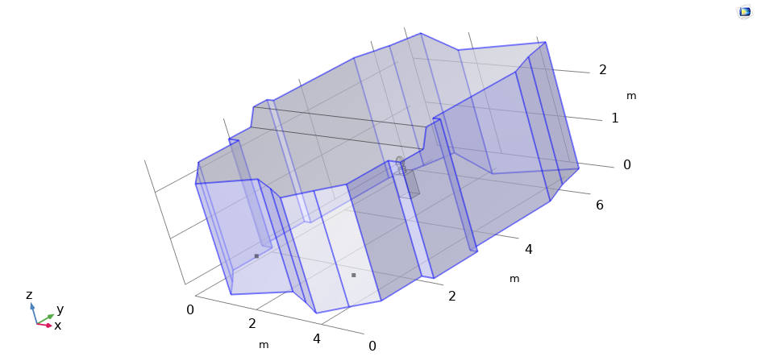
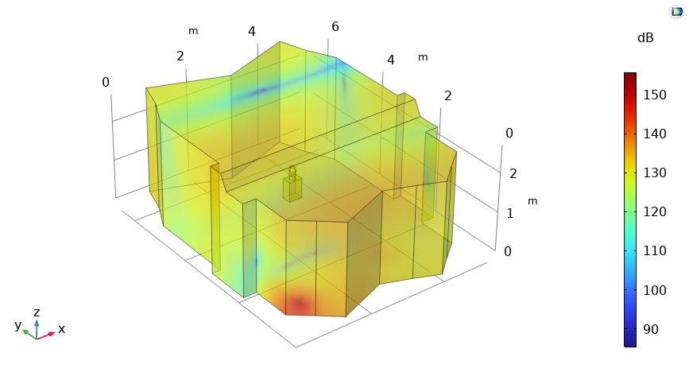
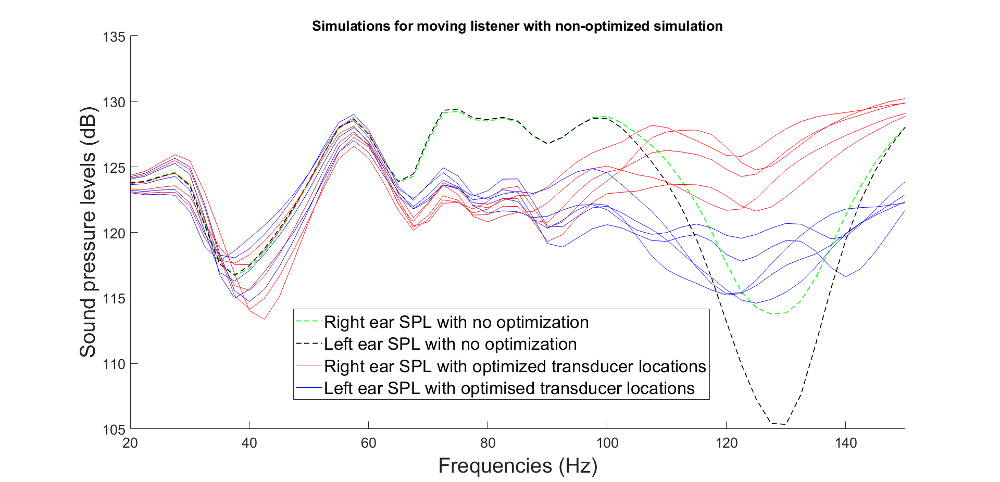

Project Summary
| Project | University Project |
|---|---|
| Collaboration | Genelec Oy |
| University | University of Eastern Finland |
| Year | 2025–2026 |
| Software | COMSOL Multiphysics and MATLAB |
| Main topics |
Room acoustics Finite Element Method (FEM) Numerical optimization |

Project Overview
Low-frequency sound reproduction is strongly influenced by room geometry, boundary materials and standing-wave phenomena. Poor loudspeaker placement may cause large variations in sound pressure levels, resulting in uneven bass reproduction.
The objective of the project was to determine loudspeaker locations that minimize these variations using numerical simulation and optimization techniques.
My Contribution
- Built a finite element acoustic model in COMSOL.
- Implemented room material models using impedance boundary conditions.
- Performed frequency-domain acoustic simulations.
- Implemented numerical optimization for loudspeaker placement.
- Compared simulation results with acoustic measurements.
- Analyzed room modes and frequency responses.
Simulation Workflow
- Create the room geometry.
- Assign acoustic material properties.
- Generate the finite element mesh.
- Simulate acoustic pressure fields.
- Evaluate the response around the listening position.
- Optimize the loudspeaker locations.
- Validate the results using acoustic measurements.
Acoustic Simulation
The finite element model was used to calculate the spatial distribution of sound pressure levels in the room. The simulations revealed how room geometry and boundary conditions influence the low-frequency sound field and create regions of amplification and cancellation.

Technologies
Simulation Results
The frequency responses were evaluated at both ears while the listener position was varied around the nominal listening location. The original and optimized loudspeaker configurations were then compared across the investigated frequency range.

Project Outcome
The optimized loudspeaker locations produced a more uniform low-frequency response around the listening position. In particular, the optimization reduced pronounced response variations caused by room modes and improved consistency between nearby listener positions.
Skills Demonstrated
Future Work
Future work could include optimizing multiple listening positions simultaneously, investigating additional acoustic treatments and extending the optimization to higher frequency ranges.